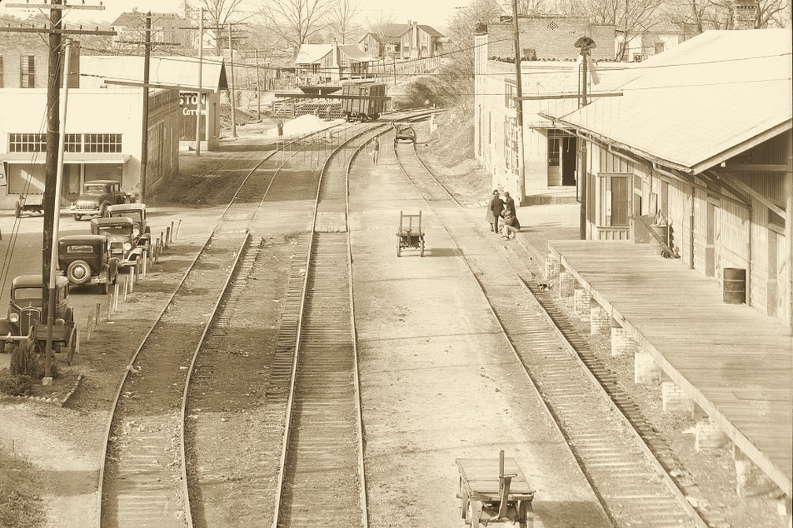
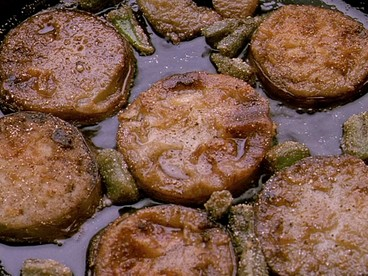

Served hot at the
WHISTLE STOP
CAFE
Whistle Stop, Alabama • By the tracks

Down the line from our door. Every train stops, and so should you.

Every day
SERVED
HOT
HOT
Green off the vine. Gold out of the skillet.
Fried Green Tomatoes
10¢
Thick slices in buttermilk and cornmeal, fried in bacon drippings. Caper remoulade.
From the kitchen
Ruth says I have to write something nice here. Coffee’s hot and Sipsey cooks. Short this week? Pay us next week.
Idgie
TRAINS AT
WHISTLE STOP
WHISTLE STOP
Daily, Sundays excepted
No. 4Birmingham7:10 A.M.
No. 9Freight, east2:40 P.M.
No. 11Freight, west11:50 P.M.
No. 9 slows at the bend. Railroad Bill seen on the line again.
OPEN 6 A.M. TILL
THE LAST TRAIN
THE LAST TRAIN
Prices subject to change. P.O. Box 91, Whistle Stop, Ala. Summer, 1932.